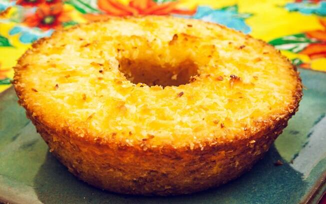

Bolo de Macaxeira

Descrição
Para fazer esse maravilhoso e simples bolinho, será necessário comprar uma caixinha de bolinho pronto no supermercado, Dona Benta é muito bom e recomendamos fortemente
Ingredientes
- Bolo de caixinha
- 3 ovos
- Margarina ou Manteiga
- Coquinho raladinho
- um cadin de Leite
Como fazer
- Despeje o conteúdo da caixa em uma forma
- Acrescente o leite, os ovos, e a Margarina e comece a mexer
- Após começar a pegar consistência, acrescente coco raladin
- Leve ao forno por uma meia horinha (ou mais)
- Seja mt feliz
Voltar